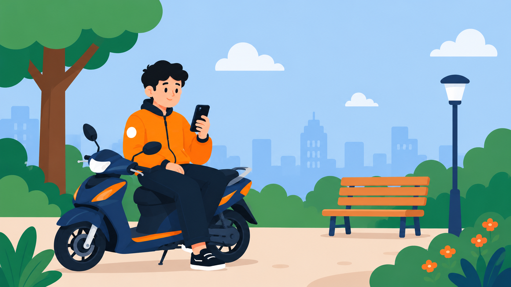

Gagal Memuat Data


{{ trip.vehicle_type.toLowerCase() === 'mobil' ? 'Mobil' : 'Motor' }}
{{ formatDateTime(trip.created_at) }}
{{ formatPrice(trip.final_price) }}
{{ trip.status === 'completed' ? 'Selesai' : 'Dibatalkan' }}
Awal
{{ trip.pickup_address }}
Tujuan
{{ trip.dropoff_address }}

Riwayat Aktivitas Kosong
Belum ada riwayat jalan nih. Yuk, ke Beranda buat mulai terima orderan!